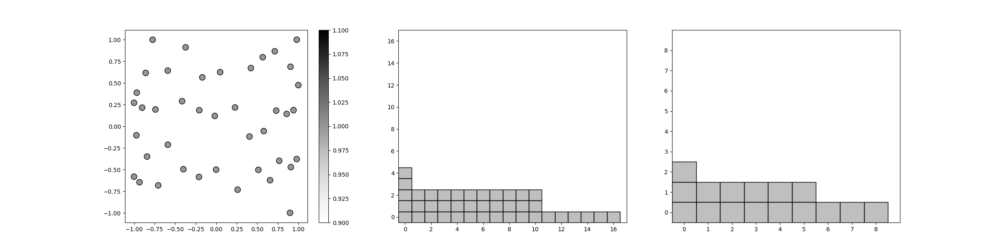
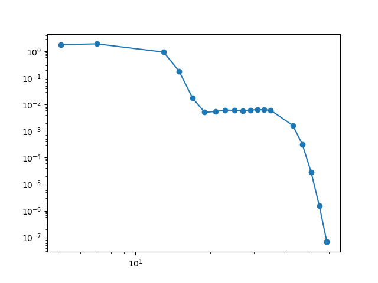

Note
Go to the end to download the full example code
Adaptive Leja Sequences
This tutorial describes how to construct a polynomial chaos expansion (PCE) of a function with uncertain parameters using Leja sequences. This tutorial assumes that the reader is familiar with the tutorial in Polynomial Chaos Regression.
First lets import necessary modules and define a function useful for estimating the error in the PCE. We will also set the random seed for reproductibility
import numpy as np
from functools import partial
from pyapprox.util.configure_plots import plt
from pyapprox.surrogates.interp.sparse_grid import plot_sparse_grid_2d
from pyapprox.benchmarks import setup_benchmark
def compute_l2_error(validation_samples, validation_values, pce,
relative=True):
pce_values = pce(validation_samples)
error = np.linalg.norm(pce_values-validation_values, axis=0)
if not relative:
error /= np.sqrt(validation_samples.shape[1])
else:
error /= np.linalg.norm(validation_values, axis=0)
return error
np.random.seed(1)
Our goal is to demonstrate how to use a polynomial chaos expansion (PCE) to approximate a function \(f(z): \reals^d \rightarrow \reals\) parameterized by the random variables \(z=(z_1,\ldots,z_d)\). with the joint probability density function \(\pdf(\V{\rv})\). In the following we will use a function commonly used in the literature, the oscillatory Genz function. This function is well suited for testing as the number of variables and the non-linearity can be adjusted. We define the random variables and the function with the following code
c = np.array([[10, 0.01]]).T
w = np.full((2, 1), 0.25)
benchmark = setup_benchmark('genz', nvars=2, test_name='oscillatory',
coeff=(c, w))
model = benchmark.fun
variable = benchmark.variable
# benchmark = setup_benchmark('ishigami', a=7, b=0.1)
# variable = benchmark.variable
# model = benchmark.fun
Here we have intentionally set the coefficients \(c\): of the Genz function to be highly anisotropic, to emphasize the properties of the adaptive algorithm.
PCE represent the model output \(f(\V{\rv})\) as an expansion in orthonormal polynomials,
where \(\lambda=(\lambda_1\ldots,\lambda_d)\in\mathbb{N}_0^d\) is a multi-index and \(\Lambda\) specifies the terms included in the expansion. In Polynomial Chaos Regression we set \(\Lambda\) to be a total degree expansion. This choice was somewhat arbitray. The exact indices in \(\Lambda\) should be chosen with more care. The number of terms in a PCE dictates how many samples are need to accurately compute the coefficients of the expansion. Consequently we should choose the index set \(\Lambda\) in a way that minimizes error for a fixed computational budget. In this tutorial we use an adaptive algorithm to construct an index set that greedily minimizes the error in the PCE.
Before starting the adaptive algorithm we will generate some test data to estimate the error in the PCE as the adaptive algorithm evolves. We will compute the error at each step using a callback function.
from pyapprox import variables
var_trans = variables.AffineTransform(variable)
validation_samples = variable.rvs(int(1e3))
validation_values = model(validation_samples)
errors = []
num_samples = []
def callback(pce):
error = compute_l2_error(validation_samples, validation_values, pce)
errors.append(error)
num_samples.append(pce.samples.shape[1])
Now we setup the options for the adaptive algorithm.
from pyapprox import surrogates
max_num_samples = 200
opts = {"method": "leja",
"options": {"max_nsamples": 100, "tol": 1e-10, "callback": callback}}
The AdaptiveLejaPCE object is used to build an adaptive Leja sequence. Before building the sequence, let us first introduce the basic concepts of Leja sequences.
A Leja sequence (LS) is essentially a doubly-greedy computation of a determinant maximization procedure. Given an existing set of nodes \(\mathcal{Z}_M\), a Leja sequence update chooses a new node \(\V{\rv}^{(M+1)}\) by maximizing the determinant of a new Vandermonde-like matrix with an additional row and column: the additional column is formed by adding a single predetermined new basis element, \(\phi_{M+1}\), and the additional row is defined by the newly added point. Hence a LS is both greedy in the chosen interpolation points, and also assumes some a priori ordering of the basis elements.
In one dimension, a weighted LS can be understood without linear algebra: Let \(\mathcal{Z}_N\) be a set of nodes on \(\rvdom\) with cardinality \(N \geq 1\). We will add a new point \(z^{(N+1)}\) to \(\mathcal{Z}\) determined by the following:
- We omit notation indicating the dependence of \(z^{(N+1)}\) on \(\mathcal{Z}_N\).
By iterating the above equation, one can progressively build up the Leja sequence \(\mathcal{Z}\) by recomputing and maximizing the objective function for increasing \(N\).
Traditionally Leja sequences were developed with \(v(\rv)=1\). In the following we use
which is the square-root of the Christoffel function.
Note univaraite weighted Leja sequence were intially developed setting \(v(\V{\rv})=\sqrt{\rho(\V{\rv}}\) to be the square-root of the joint probability density of the random variables [NJ2014]. However using the Christoffel function typically produces more well-conditioned Leja sequences and requires no explicit knowldege of the joint PDF.
In multiple dimensions, formulating a generalization of the univariate procedure is challenging. The following linear algebra formulation greedily maximizes the weighted Vandermonde-like determinant
The above procedure is an optimization with no known explicit solution, so constructing a Leja sequence is challenging. In [NJ2014], gradient based optimization was used to construct weighted Leja sequences. However a simpler procedure based upon LU factorization can also be used [JFNMP2019]. The simpler approach comes at a cost of slight degradation in the achieved determinant of the LS. We adopt the LU-based approach here due to its ease of implementation.
The algorithm for generating weighted Leja sequences using LU factorization is outlined in Algorithm Algorithm 1. The algorithm consists of 5 steps. First a polynomial basis must be specified. The number of polynomial basis elements must be greater than or equal to the number of desired samples in the Leja sequence, i.e. \(N \geq M\). The input basis must also be ordered, and the Leja sequence is dependent on this ordering. In this paper we only consider total-degree polynomial spaces, that is we have
for some polynomial degree \(k\). We use lexigraphical ordering on \(\Lambda\) to define the basis. The second step consists of generating a set of \(S\) candidate samples \(\mathcal{Z}_S\); ideally, \(S \gg M\). Our candidate samples will be generated as independent and identically-distributed realizations of a random variable. The precise choice of the random draw will be discussed in the next section. For now we only require that the measure of the draw have support identical with the measure of \(Z\). Once candidates have been generated we then form the \(S \times N\) Vandermonde-like matrix \(\Phi\), precondition this matrix with \(V\), and compute a truncated LU factorization. (Computing the full LU factorization is expensive and unnecessary.) We terminate the LU factorization algorithm after computing the first \(M\) pivots. These ordered pivots correspond to indices in the candidate samples that will make up the Leja sequence. If we assume that there is textit{any} size-\(M\) subset of \(\mathcal{Z}_S\) that is unisolvent for interpolation, then by the pivoting procedure, a Leja sequence is always chosen so that the interpolation problem is unisolvent.
Algorithm 1:
Require number of desired samples \(M\), preconditioning function \(v(\V{\rv})\), basis \(\{\phi\}_{n=1}^N\)
Choose the index set \(\Lambda\) such that \(N\ge M\)
Specifying an ordering of the basis \(\phi\)
Generate set of \(S\gg M\) candidate samples \(\mathcal{Z}_S\)
Build \(\Phi\), \(\Phi_{m,n} =\phi_n(\V{\rv}^{(m)})\), \(m\in[S]\), \(n\in[N]\)
Compute preconditioning matrix \(V\), \(V_{mm}=v(\V{\rv}^{(m)})\)
Compute first M pivots of LU factorization, \(PLU=LU(V \Phi,M)\)
Once a Leja sequence \(\mathcal{Z}_M\) has been generated one can easily generate a polynomial interpolant with two simple steps. The first step evaluates the function at the samples in the sequence, i.e. \(y=f(\mathcal{Z})\). The coefficients of the PCE interpolant can then be computed via
\[\alpha=(LU)^{-1}P^{-1} V y\]
where the matrices \(P\), \(L\), and \(U\) are identified in Algorithm 1.
These two steps are carried out at each iteration of the adaptive algorithm. The PCE coefficients are used to guide refinement of the polynomial index set \(\Lambda\).
In the following we use an adaptive algorithm first developed for generalized sparse grid approximation (this is discussed in another tutorial). At each iteration the algorithm identifies a number of different sets \(\mathcal{S}\subset\Lambda\) of candidate indices \(\V{\lambda}\) which may significantly reduce the PCE error. The algorithm then chooses the set \(\mathcal{S}\) which does produce the biggest change and uses this set to generate new candidate sets \(\mathcal{S}\) for refinement. Here we use the change in variance induced by a set as a proxy for the change in PCE error. This change in variance is simply the sum of the coefficients squared associated with the set, i.e.
We end this section by noting that (approximate) Fekete points are an alternative determinant-maximizing choice for interpolation points. We opt to use Leja sequences here because they are indeed a sequence, whereas a Fekete point construction is not nested.
Now we are in a position to start the adaptive process
pce = surrogates.adaptive_approximate(
benchmark.fun, benchmark.variable, "polynomial_chaos", opts).approx
[1 2] 4.1460014785669786e-15
Accuracy misleadingly appears reached because admissibility criterion is preventing new subspaces from being added to the active set
[0 3] 4.1460014785669786e-15
Accuracy misleadingly appears reached because admissibility criterion is preventing new subspaces from being added to the active set
And finally we plot the final polynomial index set \(\Lambda\) the subspace index set, the Leja sequence, and the decay in error as the number of samples increases.
plot_sparse_grid_2d(
pce.samples, np.ones(pce.samples.shape[1]),
pce.pce.indices, pce.subspace_indices)
plt.figure()
plt.loglog(num_samples, errors, 'o-')
plt.show()
- 
- 
References
Total running time of the script: ( 0 minutes 1.066 seconds)